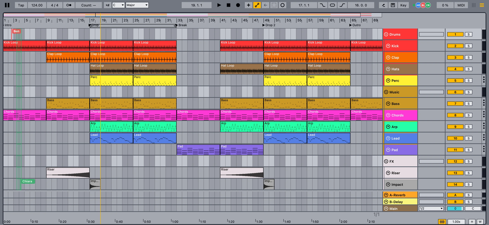
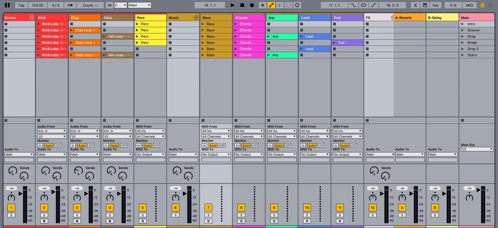
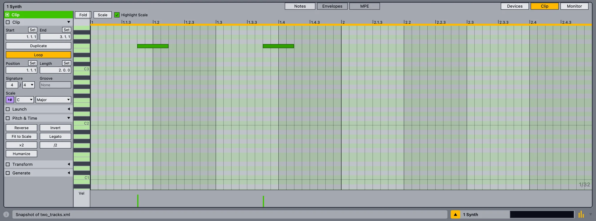
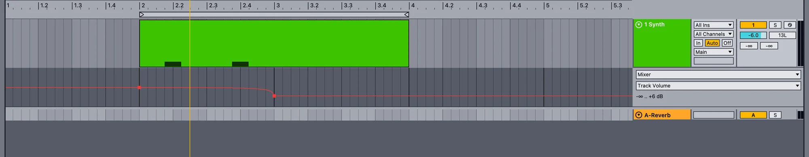
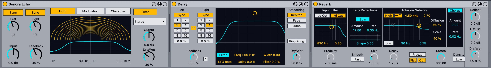
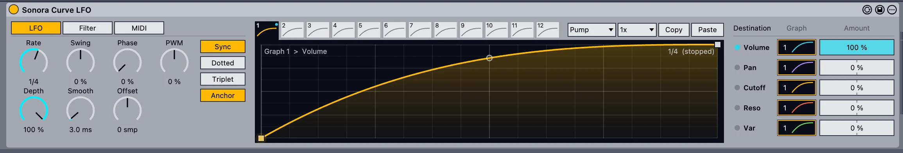
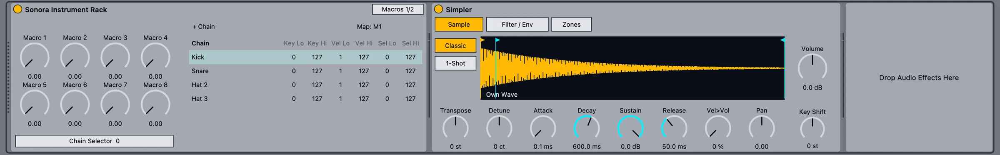
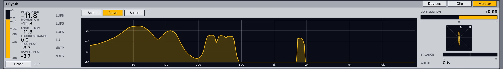
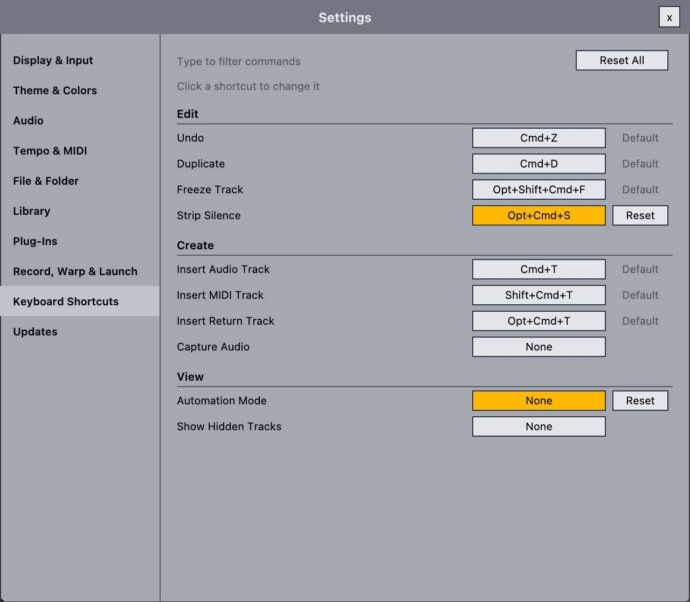

A complete studio, growing fast.
Record, edit, mix and export, with a few things you won't find elsewhere. This page lists what works today in the alpha. Some parts are rough around the edges, and we say so where it matters.
One project, several producers, at the same time.
Share a session from the File menu or the people button in the control bar. Guests join with an invite link, or find your session on the local network and ask to join.
- Live presence: everyone's pointer, selected clip and time selection in the Arrangement, their column in the Session view, and their position in the piano roll.
- Shared transport that starts together, with late joiners catching up. Each guest can switch it off.
- Mixer and device moves show up for everyone as they happen.
- Samples are sent to guests automatically and checked before use. A guest can save a complete copy.
- Per-person undo, so your undo never removes someone else's work. Conflicting edits are resolved, and you're told when it happens.
- Roles and safety: host-approved join requests, Editor or Listener roles, a four-word safety code and Remove.
- Local network or internet: peer-to-peer connections, with an open-source relay server for internet sessions.
Still to come: a public relay (today you run your own), voice chat, sharing recordings made by guests, and smoother sync timing.

One command service, two ways in.
The built-in assistant and outside agents use the same set of checked operations. Nothing reaches into your project behind your back.
- Built-in assistant with OpenAI, Anthropic, Gemini, DeepSeek, GLM, OpenRouter or a custom compatible endpoint. You pay your provider directly; the key is stored in the macOS Keychain.
- MCP control: Claude, Codex and other MCP clients attach to one open project, after you allow it.
- What they can do: inspect the project, add, edit and delete MIDI notes, insert and remove devices, and change native, rack and VST3 parameters.
- Guard rails: every change is checked against the current project, reported with a result, and can be undone. Access ends when you switch projects or quit.
Connecting an MCP client is a developer setup for now (Node.js and the bridge from the repository). Export, recording and some track operations aren't exposed to agents yet.

Sonora's own instruments.
Original instruments with their own sound engines, included for free.
Sonora Prism
A powerful wavetable synth with its own sound engine, built for big leads, basses and pads. It opens in its own window, like a plug-in. It's also available as a separate VST3 plug-in for Apple silicon Macs, so you can try it in other VST3 hosts.
- Oscillators: three wavetable oscillators with two warps each, sub oscillator and noise; import your own wavetables and samples.
- Shaping: two filters, four envelopes, ten LFOs, 64 modulation routes and eight macros.
- Hands-on: drag an envelope, LFO or macro onto a knob to modulate it, and watch the modulation move live.
- Voices: up to 32 voices with 16-voice unison, mono and legato modes, glide.

Sonora Resynth
From a recording to a playable instrument. Resynth analyzes a bass line or melody and rebuilds its sound from up to 96 harmonics and modeled noise. It doesn't play back the recording: it synthesizes the sound, so you can play new notes and reshape it.
- Stem to MIDI: Create › Resynthesize to New MIDI Track adds editable MIDI and the instrument in one step, in one undo.
- Or load audio straight into the instrument and create the MIDI from there.
- Synth, Hybrid or Reference playback, to compare with the source.
- Sound design: drag single harmonics, shape four noise bands, filter, two envelopes, an LFO, and mono, legato or 8-voice poly.
- Keep it or drop it: remove the recording and keep only the sound model.
Native in Sonora only (no plug-in version yet). Best with dry parts, one note at a time, up to 30 seconds. Polyphonic material, heavy reverb or distortion can produce wrong notes. Runs locally, with no cloud service.

More instruments
- Sonora FM and Sonora Sampler
- Sonora Vector, a compact two-oscillator wavetable synth
- Simpler and Impulse for samples and drums
- Drum, Instrument and Audio Effect Racks with macros
LFOs for anything
- Sonora LFO and Sonora Curve LFO, mappable to any parameter
- Arpeggiator, Note Length and Velocity MIDI effects
Long-requested, now built in.
Features producers have asked for in forums for years.
Capture Audio
Sonora keeps the last 60 seconds of up to eight inputs. Press Capture and the passage you just played becomes a clip.
Linked MIDI clips
Duplicate as Linked, then edit one copy and every linked copy follows, in a single undo step.
Hide and deactivate tracks
Hidden tracks get out of the way. Deactivated tracks load no plug-ins and use no CPU.
Strip Silence
Cut an audio clip into its sounding parts. Option-Left and Option-Right jump between transients.
Rebindable shortcuts
Change the key for any menu command in Settings › Keyboard Shortcuts.
Audio to MIDI and stems
Convert melody, harmony or drums to MIDI, slice audio to a MIDI track, or split a clip into stems with a separator you've installed (audio-separator or Demucs).
Both views, linked the way you know them.
- Session view: clip launching, scenes, stop buttons, groups that fold, and the mixer with sends and routing.
- Arrangement view: grid and zoom, loop brace, locators, multi-track selection and dragging, automation lanes.
- Track groups with automatic numbering, folding and framing.
- Return tracks: insert new ones with Option-Cmd-T.

Fast hands, small tools.
- MIDI editor with scale highlighting, folding, velocity lane and MPE view. Fit to Scale, Legato, Reverse, Invert, Humanize, ×2 and ÷2.
- Audio editing: fades with curves, split, consolidate, copy-drag, and a sample view with warp markers.
- Automation with curves, plus clip envelopes for mixer, device and MIDI controller parameters.
- Freeze and bounce: freeze a heavy track, bounce in place or to a new track.

Automation that reads like music
Draw breakpoints, bend curves, and pick any mixer or device parameter from the lane choosers.

Catch the take, even the one you missed.
Audio and MIDI recording
Record in Arrangement or Session, with input monitoring, count-in, punch in and out, and a metronome.
Take lanes and comping
Loop recording builds take lanes. Pick the best parts of each take into one comp.
Capture MIDI and Capture Audio
Sonora keeps listening while the transport is stopped, for MIDI and for audio.
Session overdub
Overdub into looping Session clips, and record each track independently.
A real-time engine of its own.
The audio engine is written for low-latency playback: the audio thread never allocates memory, takes a lock or writes a log line.
Time-stretching
Beats, Tones, Texture, Complex and Complex Pro warp modes, all written for Sonora.
Tempo detection
Drop a loop in and Sonora detects its tempo so it fits your project.
Plug-in delay compensation
Every path stays in time, through groups and returns.
File formats
WAV, AIFF, FLAC, Ogg and MP3, and on macOS also M4A/AAC/ALAC and CAF.
Native devices, original code.
Sonora brings its own versions of the effects producers use most, written from scratch, with faces that follow a layout you may know.

Sonora Echo, Delay and Reverb.

Sonora Curve LFO: draw a curve and send it to volume, pan or the filter.

Shape the sound
- EQ Eight, Utility, Compressor, Limiter
- Reverb, Delay, Echo
- Auto Filter, Auto Pan, Redux, Gate
- Tuner and a loudness meter
Play the parts
- Sonora Prism, Sonora Resynth
- Sonora FM, Sonora Sampler, Sonora Vector
- Simpler, Impulse and Racks
Move the notes
- Arpeggiator, Note Length, Velocity
- Sonora LFO and Curve LFO
Native devices are Sonora's own implementations and may not sound identical to devices of the same name elsewhere. See Compatibility.
Your plug-ins, your sounds.
VST3 and Audio Units
Host your plug-ins, with their state saved in the project.
Safe scanning
Plug-ins are scanned in a separate process with a timeout. One that crashes or hangs is blocked instead of taking the app down.
A browser that sorts itself
Browse plug-ins by vendor, format and tags, and drag them onto tracks.
Host transport
Plug-ins see tempo, position and play state, so synced arps and delays lock to the song.
Finish the track in the same app.
- Monitor tab: integrated, short-term and momentary LUFS, loudness range, true peak, spectrum, oscilloscope, correlation and goniometer.
- Export Audio: render the main output, one track or all stems to WAV, AIFF or FLAC, with normalize, dither and a loudness report.
- Solo including exclusive solo and solo through groups and returns.

Plug in and play.
MIDI learn
Enter MIDI map mode, click a control and move a knob. Works for mixer, device and clip controls.
Sample-accurate input
Incoming notes are timed to the sample, not to the audio buffer.
MIDI out and clock
Drive hardware synths and sync drum machines to Sonora's tempo.
Computer keyboard
No controller with you? Play notes from your Mac's keyboard.
Make it yours.
- Keyboard shortcuts: rebind any menu command, with conflicts moved for you.
- Themes: a light default theme, and you can load
.asktheme files. - Resizable layout with UI zoom, and browser, detail and mixer sections you can show or hide.
- GPU drawing with Metal on macOS.
- Offline by default: no account, no telemetry. Your projects stay on your Mac.

Keeping up is easy.
On the Mac, Sonora updates itself with Sparkle, the open-source updater many Mac apps use. Delta updates download only what changed; if a delta can't be used, Sonora downloads the full update instead. Updates are signed and checked, and Sonora never restarts in the middle of a take. More about updates.
Try it, break it, tell us.
Sonora is in alpha. Your bug reports decide what gets fixed first.